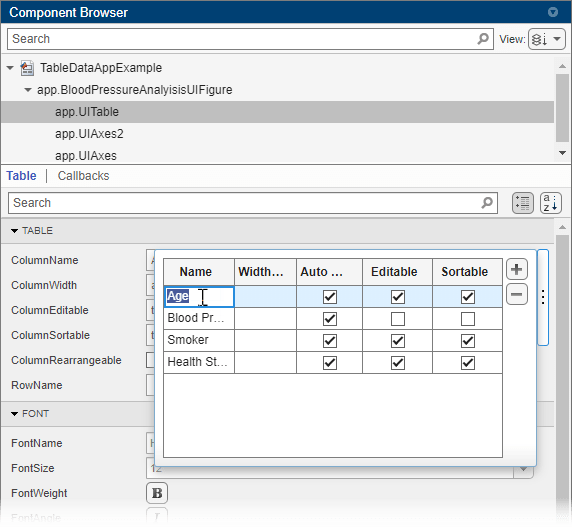

Add Tables to App Designer Apps
To display tabular data in an App Designer app, use a table UI component. You can configure options for app users to interact with that data by sorting or rearranging columns, or by selecting rows, columns, or cells in the app.
To add a table UI component to an App Designer app, you must work in both Design View and Code View.
Use Design View to:
Create the table UI component.
Specify row and column names.
Specify interactivity options such as sortability and editability.
Create a StartupFcn callback in Code
View to:
Populate the table data in the table UI component.
Configure the data appearance.
To see an implementation of all the steps described on this page, see Create Interactive Table in an App.
Create Table and Configure Table Behavior
In Design View, follow these steps to add a table UI component to your app:
Drag a Table component from the Component Library onto the app canvas.
Select the table UI component in the Component Browser.
To configure column information for the table, click the
 button to the right
of the column-related table properties. Use the
editor to interactively add and rename table
columns. You can also specify interactivity
options for each column, such as whether the
column is editable or sortable when a user
interacts with the table in an app.
button to the right
of the column-related table properties. Use the
editor to interactively add and rename table
columns. You can also specify interactivity
options for each column, such as whether the
column is editable or sortable when a user
interacts with the table in an app.
To configure row names, use the RowName field in the Component Browser. However, the row names appear only once the table is populated with data when the app is run, and therefore do not appear in Design View.
Populate Table Data
In Code View, use these steps to populate table
data in a StartupFcn callback. This callback is
executed when a user runs the app.
In the Component Browser, right-click the app node and select Callbacks > Add StartupFcn callback. The app node has the same name as your MLAPP file.

In the
startupFcncallback code in Code View, programmatically assign your table data to the table UI component using theDataproperty. For example, this code reads sample patient data and populates the table with that data. It also displays a subset of the data in the table UI component.function startupFcn(app) % Read table array from file t = readtable("patients.xls"); vars = {'Age','Systolic','SelfAssessedHealthStatus','Smoker'}; t = t(1:20,vars); % Add data to the table UI Component app.UITable.Data = t; end
For more information about how table data is displayed in a table UI component, see Format Tabular Data in Apps.
Optionally, in the
startupFcncallback code, modify the way that the table data is displayed by usinguistyle. For example, change the background color and font color of the first column of the table by adding this code to theStartupFcncallback.For more information, see Style Cells in a Table UI Component.s = uistyle("BackgroundColor","black","FontColor","white"); addStyle(app.UITable,s,"column",1);
For a fully coded example of a startupFcn callback,
see Create Interactive Table in an App.